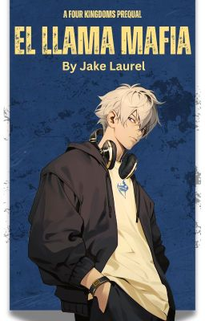

After waking up from the 3rd Great SCP War, Charlie Davidson, the last kingdom owner alive, heads back home. Upon entering Fort Hateno, he meets a suspicious therapist by the name of Dr. Bridges. The two of them discuss the past, and what happened during the year Charlie went awol.
Nicola Richard lives in a war-torn world where his monastery was destroyed. Seeking refuge and safety, he travels far and wide until he meets a friend he'll never forget.
Before being the infamous leader of the LLama Mafia, Eren Kruger used to live at an orphanage. When he finally decides to escape, he meets many rejects along the way as he creates his own band of misfits. In his way, are the other mafias such as the Redbandas, the Turtlebacks, and Oceania who are all set on finding one treasure: disc eleven.

This story revolves around the past of Nicholas Pikaman before he meets Naofumi and becomes a Kingdom Owner. In this story, he leads the infamous western gang known as the Hellshire Gang.